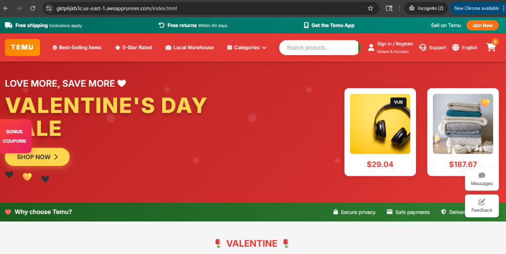

🛒 Temu Clone
Shop Like a Billionaire
DEDEEPYA MADIREDDY
HTML5 CSS3 JavaScript Node.js AWS App Runner
📊 Executive Summary
| Problem | Solution | Key Metrics |
|---|---|---|
| Shoppers need streamlined deal browsing | Modern e-commerce clone with search & filtering | 6 HTML pages |
| Cloud deployment is complex | AI-assisted dev + AWS App Runner | <5 min deploy time |
| No CI/CD experience | GitHub → AWS auto-deployment | Auto-deploy enabled |
Key Achievements
- ✓ Full e-commerce UI with 50+ products
- ✓ Responsive design (mobile + desktop)
- ✓ Live cloud deployment with auto-scaling
- ✓ Zero-config CI/CD pipeline
🎯 Phase 1-2: Problem Framing
Problem Statement
"Building an e-commerce application requires complex setup: product catalogs, search functionality, cart management, and cloud deployment—typically taking weeks of development."
AI Use Case
"Can AI-assisted development with Antigravity accelerate building a production-ready e-commerce clone from concept to live deployment?"
Why This Matters
- E-commerce is a $6.3 trillion industry
- Understanding full-stack development is essential
- Cloud deployment skills are in high demand
🏗️ Technical Architecture
| Layer | Technology |
|---|---|
| Frontend | HTML5, CSS3, JavaScript |
| Server | Node.js 22 + Express |
| Styling | Custom CSS + Google Fonts |
| Deployment | AWS App Runner |
| CI/CD | GitHub → Auto-deploy |
🎨 Phase 3: Design & Prototype
Workshop 1: AI Prompts Used
- "Create a Temu-style e-commerce homepage with hero banner and product grid"
- "Add category navigation with dropdown and search functionality"
- "Build a product detail page with variants and add-to-cart"
Prototype Features Generated
🎯 Hero Banner
Valentine's Day sale theme with CTAs
📦 Product Grid
50+ items with prices & badges
🔍 Search
Query param filtering
💻 IDE Migration & Local Development
Workshop 2: Migration Process
Files Created
| File | Size | Purpose |
|---|---|---|
| index.html | 34 KB | Homepage with products |
| product.html | 12 KB | Product detail page |
| checkout.html | 29 KB | Checkout form |
| styles.css | 55 KB | 2,900+ lines of CSS |
| script.js | 85 KB | All JavaScript logic |
| apprunner.yaml | 222 B | Deployment config |
📂 GitHub Repository

Repository: Dedeepya2026/react-app-aws-runner
View on GitHub🧪 Phase 4: Testing & Responsible AI
Functional Testing
- ✓ Product browsing & navigation
- ✓ Search with query params
- ✓ Category filtering
- ✓ Add to cart functionality
- ✓ Checkout form validation
- ✓ Responsive design
AI Responsibility
| Concern | Mitigation |
|---|---|
| Code quality | Manual review |
| Security | No sensitive data |
| Accessibility | Semantic HTML |
| Accuracy | Human verification |
🐛 Bugs Found & Fixed
| Bug | Impact | Fix |
|---|---|---|
| Runtime version error | Deployment failed | Updated to nodejs22 |
| Port configuration | App not accessible | Set port: 8080 |
| Image loading | Broken images | Used reliable CDN URLs |
| Cart persistence | Reset on refresh | Added localStorage |
| Search encoding | Special chars broke | URL encode/decode |
Critical Fix
Error: "The specified runtime version is not supported"
Solution: Changed nodejs18 → nodejs22 in apprunner.yaml☁️ Phase 5: AWS Deployment
apprunner.yaml
version: 1.0
runtime: nodejs22
build:
commands:
pre-build:
- npm install
build:
- npm run build
run:
command: npm start
network:
port: 8080
env:
- name: NODE_ENV
value: productionAWS CLI Commands
# Create GitHub connection
aws apprunner create-connection \
--connection-name github-app-runner
# Create App Runner service
aws apprunner create-service \
--cli-input-json file://config.json
# Get live URL
aws apprunner list-services \
--query "ServiceSummaryList[].ServiceUrl"🔗 AWS CLI Connected to Cursor IDE

Account Verified ✓
Command:
aws sts get-caller-identityBenefits:
- Deploy from IDE terminal
- No context switching
- Faster iteration
🚧 Deployment Challenges
| Challenge | Solution |
|---|---|
| First-time AWS setup | Console wizard for GitHub connection |
| Runtime compatibility | Updated to nodejs22 |
| Understanding logs | CloudWatch log streams |
| CI/CD configuration | "Configuration source: Repository" |
Deployment Timeline
✅ AWS App Runner - Service Running

| Service Name | react-app-aws-runner |
|---|---|
| Status | ✓ Running |
| Live URL | gktp6jkb3c.us-east-1.awsapprunner.com |
🚀 Live Demo
Open Live Application| Setting | Value |
|---|---|
| CPU | 0.25 vCPU |
| Memory | 0.5 GB |
| Auto-deploy | Enabled |
| Region | us-east-1 |
🌐 Live Website Preview

🔄 Phase 6: Feedback & Iteration
Feedback Received
- "Add more categories" → Added 20+
- "Make search visible" → Enlarged bar
- "Add product badges" → Hot/Sale/New
- "Fix mobile nav" → Responsive menu
Iterations Made
- ✓ Enhanced hover effects
- ✓ Loading animations
- ✓ Better form validation
- ✓ Cart notification popups
🤖 AI's Role & Lessons Learned
Most Effective AI Prompts
| Type | Example | Result |
|---|---|---|
| Feature | "Add product detail page with tabs" | Complete HTML/CSS/JS |
| Bug fix | "Cart count not updating" | Found missing listener |
| Deploy help | "Runtime not supported error" | Suggested nodejs22 |
Key Lessons
🛠️ Tools Used
AI & Development
- Antigravity - AI coding
- Cursor IDE - Editor
- Claude - Prototyping
Cloud & DevOps
- AWS App Runner
- AWS CLI
- CloudWatch
Version Control
- Git
- GitHub
- Auto-deploy
💰 Value Add & Business Impact
Cost/Benefit Analysis
| Time saved | ~40 hours |
| Deploy complexity | Days → Minutes |
| AWS learning curve | Flattened |
| Monthly cost | ~$25 |
Impact Potential
For Users: Easy product browsing, fast experience
For Developers: Portfolio-ready project, hands-on cloud skills
ROI: Foundation for real e-commerce site
🎯 Conclusion & Future Roadmap
What I Built
- ✓ Full e-commerce clone (6 pages)
- ✓ 50+ products, 20+ categories
- ✓ Live on AWS App Runner
- ✓ CI/CD with auto-deploy
Future Roadmap
| Phase 2 | Backend API + DynamoDB |
| Phase 3 | User auth (Cognito) |
| Phase 4 | Payments (Stripe) |
| Phase 5 | Admin dashboard |